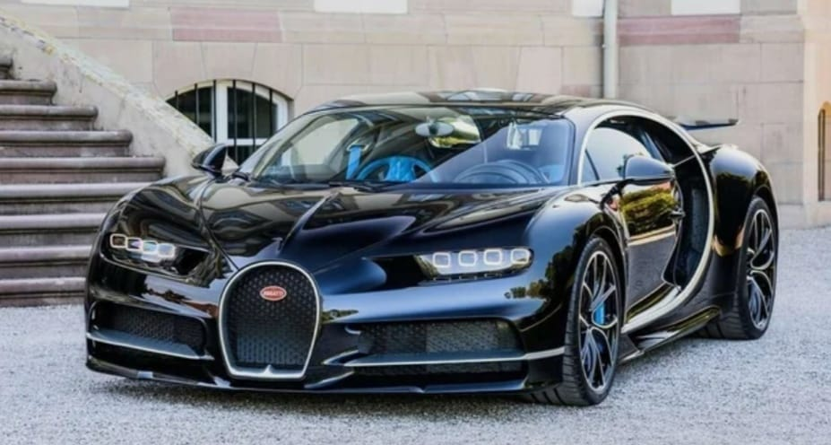
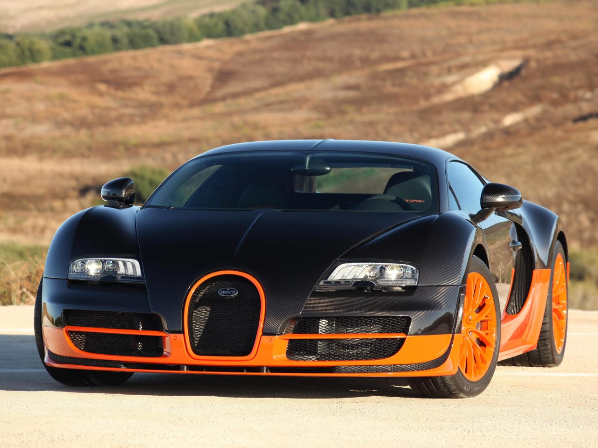
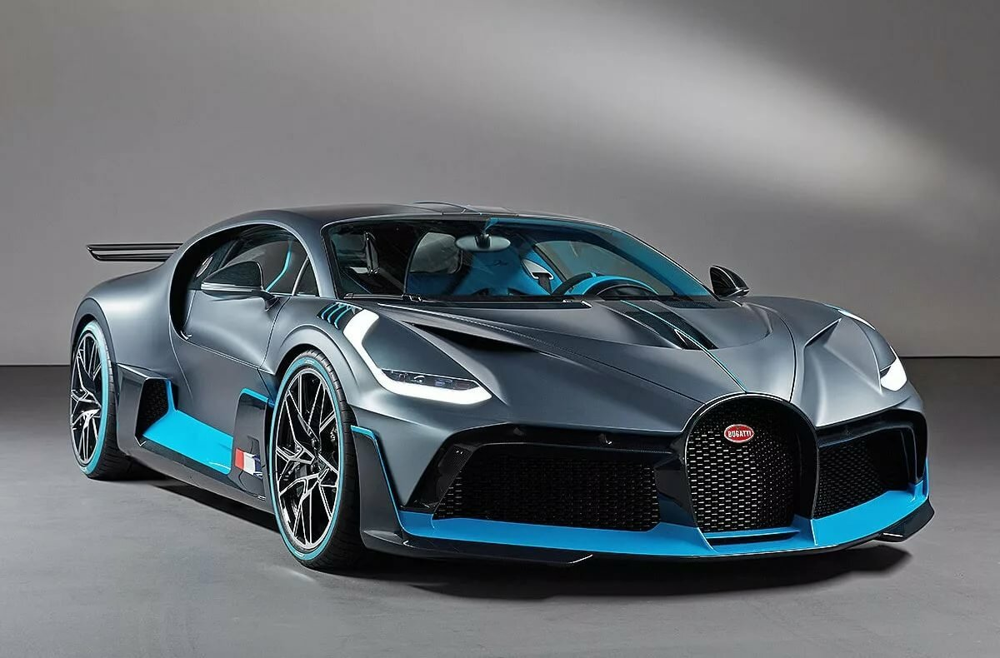
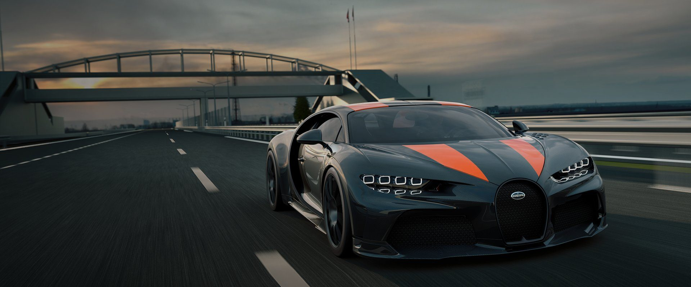
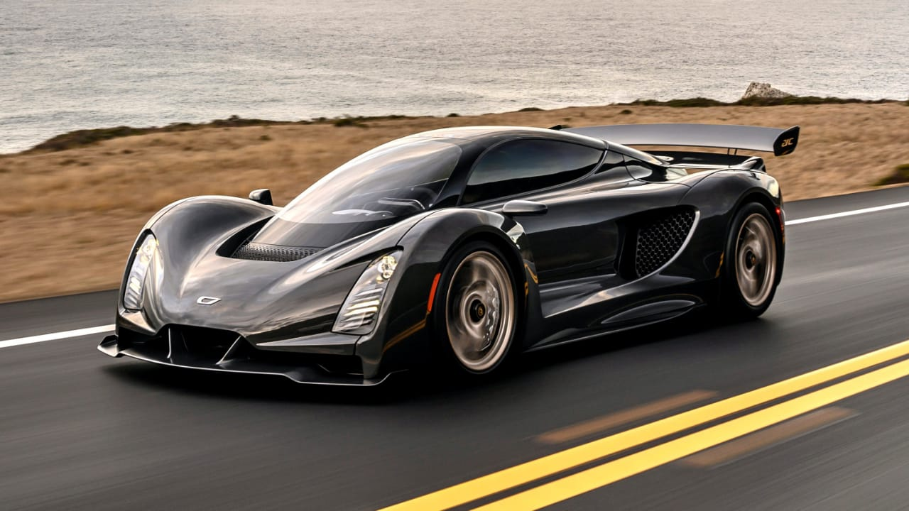

5 самых быстрых машин в 2021году
по разгону от 0 до 100 км/ч

В современном мире люди одержимы скоростью. Все становится быстрее. Придумываются новые технологии. Это особенно касается автомобилей, потому что скорость в гонках очень важна.
5. Bugatti Veyron Super Sport
Для многих людей Bugatti является символом скорости, поэтому не включить эту машину в этот список было бы большой ошибкой. В 2010 году французкая легенда установила мировой рекорд, в двух заездфх набрав среднюю скорость 431 км/ч.
Объем двигателя: 8,0л
кол-во л.сил: 1200л.с.
вес: 1838кг
до 100 км/ч: 2,5с
4. Bugatti Divo
Эта машина построена на базе своего брата Bugatti Chiron. С двигателем W16 машина легко развивает скорость 380км/ч.
Объем двигателя:8,0л
кол-во л.сил: 1500л.с
вес: 1960кг
до 100 км/ч: 2,4
3.Bugatti Chiron Super Sport 300+
Данный гиперкар смог разогнаться ло 490 км/ч и поставить мировой рекорд. Автомобиль поступил в продажу весной 2021года. Стартовая цена более 3 миллионов долларов.
Объем двигателя: 8,0л
кол-во л.сил: 1600л.с.
вес: 1860кг
до 100 км/ч: 2,4с
2.Hennesey Venom F5
Главная идея автомобиля - поставить новый мировой рекорд. Но не успел он поучаствовать в состязании, как рекорд был побит SSC Tuatara. Новая планка оказалась достижима благодаря новому двигателю.
Объем двигателя: 6,6л
кол-во л.сил: 1842л.с.
вес: 1835кг
до 100 км/ч: 2,3с

1.Czinger 21C
Это молодая кампания основана в Лос-Анджелесе в 2019 году. Казалось бы, чем может удивить новичок? В 2020 году был презентован Czinger 21C. Главное, что эта машина электрическая и многие её детали напечатаны на 3D принтере. Фишка электромотора - раскрутка до 11 тысяч оборотов в минуту.
Объем двигателя: электро.
кол-во л.сил: 1250л.с
вес: 1240кг
до 100 км/ч: 2,1с
